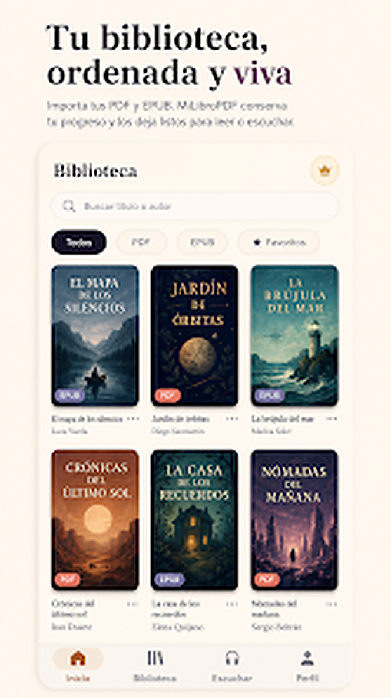
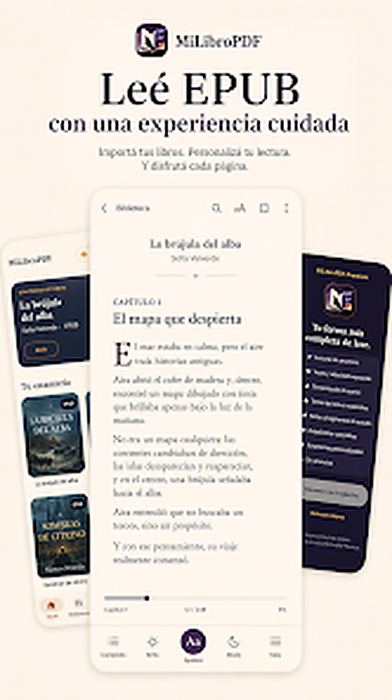
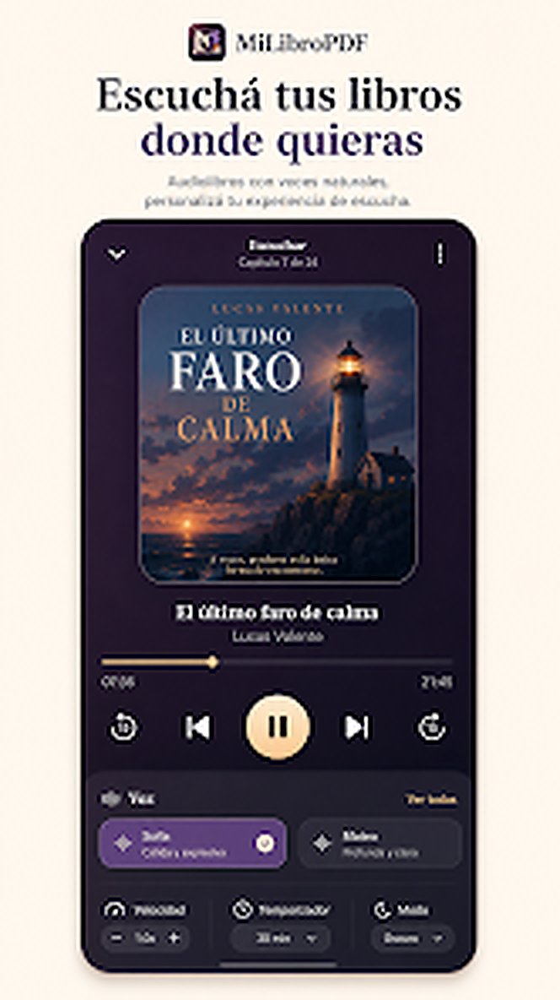
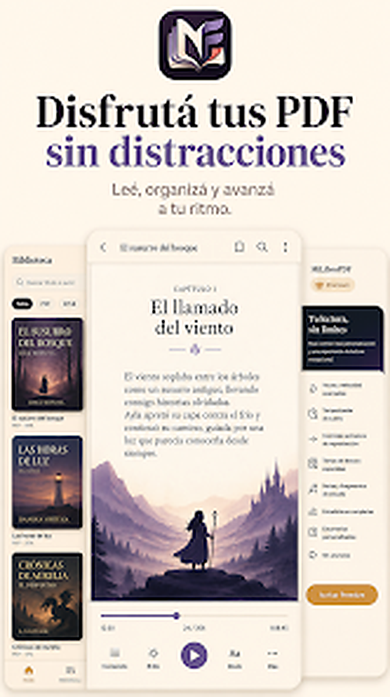
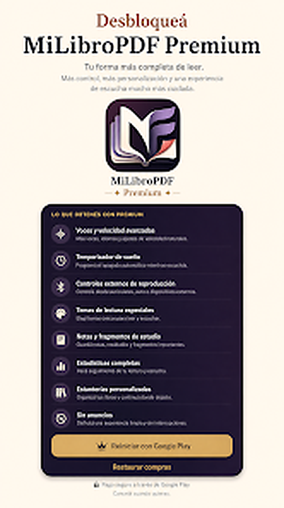

PDF y EPUB
Abrí tus propios archivos desde el dispositivo y mantenelos juntos en una biblioteca clara.
LECTURA
MiLibroPDF reúne tus PDF y EPUB en una biblioteca personal, guarda automáticamente el punto de lectura y te permite pasar de leer a escuchar desde la misma experiencia.



La versión publicada está pensada para que importar, leer, escuchar y volver a un libro sean parte del mismo flujo.
Abrí tus propios archivos desde el dispositivo y mantenelos juntos en una biblioteca clara.
Cerrá la app y volvé después sin perder página, capítulo ni posición de lectura.
Usá texto a voz, controlá la reproducción y retomá desde tu progreso actual.
Visualizá qué estás leyendo, qué guardaste y cuánto avanzaste sin perderte entre archivos.
Estas imágenes corresponden a la ficha actual de Google Play y muestran la biblioteca, los lectores y el Modo Escuchar.


La ficha actual de Google Play marca la última actualización el 26 de agosto de 2026.
Mejor compatibilidad con las barras de navegación de Android.
Nuevo gesto para cambiar de página en EPUB.
Mayor estabilidad de lectura por voz en sesiones largas.
Nuevo apagado inteligente de pantalla para usuarios Premium.
Mejoras en títulos, portadas y navegación del lector PDF.
Leé y escuchá tus propios PDF y EPUB desde una sola aplicación.